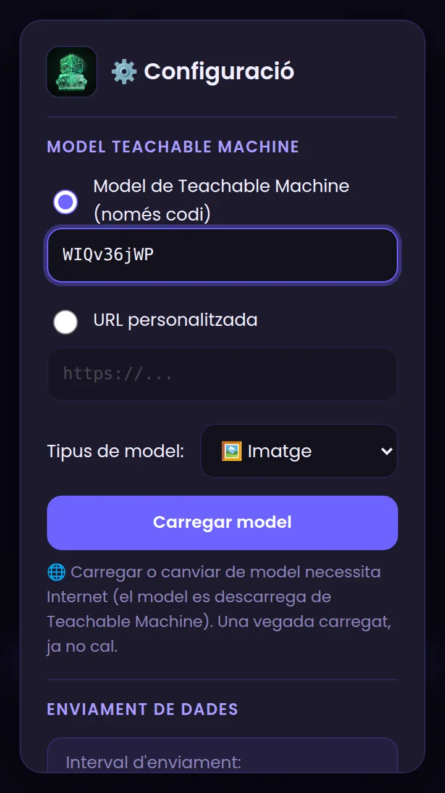
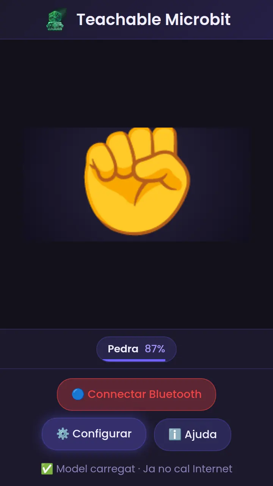
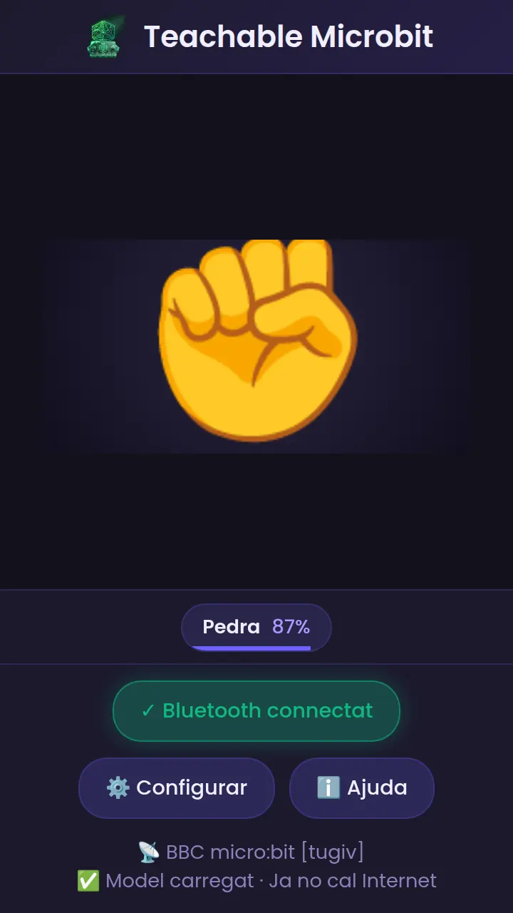
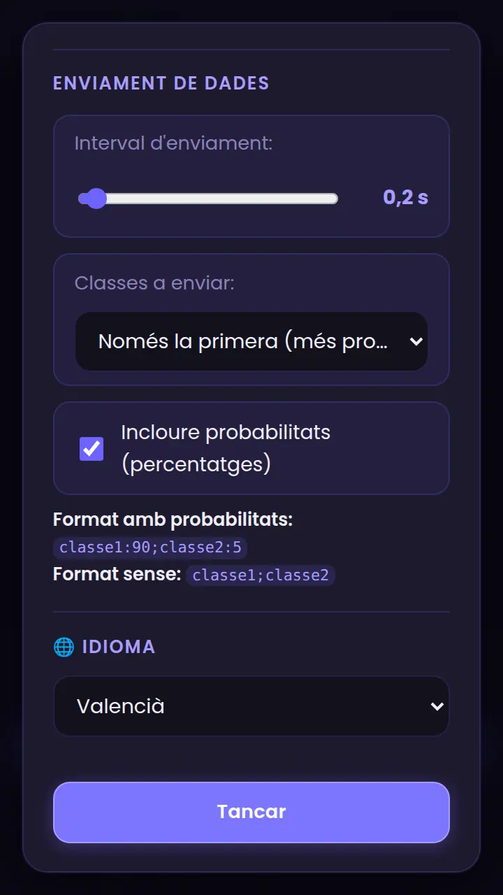

Teachable Microbit, pas a pas
Del model de Teachable Machine al programa de blocs en MakeCode: la micro:bit reacciona a allò que reconeix el teu mòbil.
Què necessites
Teachable Microbit carrega un model fet amb Google Teachable Machine (imatge o postura) i envia a la micro:bit què reconeix i amb quina seguretat. En esta guia la micro:bit mostrarà un dibuix diferent per a cada classe: pedra, paper, tisores.
Material
- Una micro:bit (V1 o V2).
- Un mòbil Android amb Chrome (no funciona en iPhone/iPad).
- Un ordinador amb MakeCode.
- Un model de Teachable Machine (ara veuràs com es fa).
Crear i publicar el model (una sola vegada)
- Entra en teachablemachine.withgoogle.com → Get Started → Image Project (o Pose Project; els noms poden estar en el teu idioma).
- Crea les classes amb noms curts i sense «:» «;» ni «,»: Pedra, Paper, Tisores. Grava mostres de cadascuna i prem Entrenar model.
- Prem Export Model → pestanya Tensorflow.js → Upload (shareable link) → Upload my model. Rebràs un enllaç com
https://teachablemachine.withgoogle.com/models/WIQv36jWP/. - El codi és la part final de l'enllaç (
WIQv36jWP). Apunta'l: el posaràs en l'app.
Crea un projecte en MakeCode
Obri makecode.microbit.org en el navegador (en un ordinador o en un Android amb Chrome). Prem New Project i posa-li un nom, per exemple teachable.
Activa el Bluetooth: afig l'extensió
Per defecte, MakeCode no inclou els blocs de Bluetooth. Cal afegir l'extensió:
- Al final de la barra de blocs, prem Extensions (o ⚙ → Extensions).
- Escriu bluetooth en el cercador i prem la targeta bluetooth.
- Torna al projecte: ja tens la categoria Bluetooth (color blau).
Bluetooth services
Fes el projecte «sense vinculació»
Este és el pas que més falla. Per defecte, una micro:bit amb Bluetooth exigeix vincular-se abans de connectar (el clàssic dibuix amb el patró de LEDs). Des d'una pàgina web això no funciona bé, així que cal fer un projecte sense vinculació:
- Prem l'engranatge ⚙ (dalt a la dreta) → Project Settings.
- Marca No Pairing Required: Anyone can connect via Bluetooth.
- Tanca el diàleg. El canvi es guarda dins del projecte, i s'aplica en descarregar-lo.
Entén el missatge que envia l'app
El format depén de la configuració («Classes a enviar» i «Incloure probabilitats»). Per defecte envia només la classe més probable, amb el seu percentatge:
| Configuració | Missatge d'exemple |
|---|---|
| 1 classe, amb probabilitats (per defecte) | Pedra:87 |
| 2 classes, amb probabilitats | Pedra:87;Paper:9 |
| 3 classes, amb probabilitats | Pedra:87;Paper:9;Tisores:4 |
| 2 classes, sense probabilitats | Pedra;Paper |
| Cap classe passa de l'1 % | 0 (una sola vegada) |
Programa (1/4): servei UART i avís de connexió
- A on start, posa bluetooth uart service (categoria Bluetooth).
- Afig on bluetooth connected / on bluetooth disconnected amb show icon ✔ / ✘, pause 500 i clear screen.
Programa (2/4): llegir el missatge i separar nom i percentatge
- Afig bluetooth on data received [new line] i set rebut to bluetooth uart read until [new line].
- Un if … else: si rebut = "0" → clear screen; si no, anem a separar-lo.
- Dins de l'else: set primera to (split rebut at ";") get value at 0. Si l'app envia diverses classes, així ens quedem amb la primera (la més probable).
- set parts to split primera at ":": ara parts té dos trossos, el nom i el percentatge.
- set nom to parts get value at 0 i set confianca to parse to integer (parts get value at 1).
Programa (3/4): un dibuix per a cada classe
Dins de l'else, després dels quatre «set», afig això: només s'actua si la seguretat és d'un 70 % o més, i segons el nom es dibuixa una icona.
El programa complet (blocs + codi)
Copia el codi, ves a la pestanya JavaScript de MakeCode, esborra el contingut, apega'l i torna a Blocks.
let rebut = ""
let primera = ""
let parts: string[] = []
let nom = ""
let confianca = 0
bluetooth.startUartService()
bluetooth.onBluetoothConnected(function () {
basic.showIcon(IconNames.Yes)
basic.pause(500)
basic.clearScreen()
})
bluetooth.onBluetoothDisconnected(function () {
basic.showIcon(IconNames.No)
basic.pause(500)
basic.clearScreen()
})
bluetooth.onUartDataReceived(serial.delimiters(Delimiters.NewLine), function () {
rebut = bluetooth.uartReadUntil(serial.delimiters(Delimiters.NewLine))
if (rebut == "0") {
basic.clearScreen()
} else {
primera = rebut.split(";")[0]
parts = primera.split(":")
nom = parts[0]
confianca = parseInt(parts[1])
if (confianca >= 70) {
if (nom == "Pedra") {
basic.showIcon(IconNames.SmallDiamond)
} else if (nom == "Paper") {
basic.showIcon(IconNames.Square)
} else if (nom == "Tisores") {
basic.showIcon(IconNames.Scissors)
}
}
}
})Descarrega el programa a la micro:bit
Quan els blocs estiguen llestos:
- Posa nom al projecte i prem ⬇ Download. Es baixa un fitxer
.hex. - Amb ordinador: connecta la micro:bit amb el cable USB; apareix com una unitat MICROBIT. Arrossega-hi el fitxer
.hex. El LED groc de darrere parpelleja i, en acabar, la micro:bit es reinicia sola. - Amb un Android: necessites un cable USB-OTG. Connecta la micro:bit i copia el
.hexa la unitat MICROBIT amb l'app de fitxers (o, si Chrome ho ofereix, connecta-la amb «Connect device» des de MakeCode). - Desconnecta el cable USB i alimenta la micro:bit amb la seua bateria (portapiles de 2 pilotes AAA) o deixa-la en un carregador/bateria USB.
Carrega el model en l'app
- Obri Teachable Microbit en Chrome i prem ⚙ Configurar.
- En Model de Teachable Machine (només codi), escriu el teu codi (p. ex.
WIQv36jWP). Si ho prefereixes, tria URL personalitzada i apega l'enllaç sencer. - En Tipus de model tria Imatge o Postura (el mateix tipus que vas crear).
- Prem Carregar model. Cal Internet només ara. Quan acabe, apareix «Model carregat · Ja no cal Internet».


Connecta la micro:bit amb Teachable Microbit
Amb la micro:bit encesa i el programa descarregat:
- Obri Teachable Microbit en Chrome (Android) i permet l'accés a la càmera quan el navegador ho demane.
- Comprova que el Bluetooth del mòbil està activat (i, en Android 11 o anterior, també la ubicació; en Android 12 o posterior, el permís de dispositius propers).
- Prem 🔵 Connectar Bluetooth.
- Chrome mostra la llista de dispositius. Tria BBC micro:bit [tugiv] i prem Vincula (Pair).
- Si tot va bé, el botó es posa verd i diu ✓ Bluetooth connectat, apareix el nom del dispositiu i la micro:bit mostra una ✔ un instant.

Si hi ha més d'una micro:bit al voltant
Cada micro:bit té un nom de 5 lletres (el que veus entre claudàtors, p. ex. [tugiv]). Per saber el de la teua, afig temporalment al bloc on start l'ordre show string (device name) (categoria Basic + Control → device name). Eixirà el nom en la pantalla de LEDs en encendre-la.
basic.showString(control.deviceName())
Configura l'enviament

| Opció | Què fa | Efecte en el missatge |
|---|---|---|
| Interval d'enviament | Cada quant s'envia (0,1–3,0 s; per defecte 0,2 s). | Menor = més fluid; major = més tranquil. |
| Classes a enviar | Només la primera, les 2 primeres o les 3 primeres. | Pedra:87 → Pedra:87;Paper:9 |
| Incloure probabilitats | Afig o lleva el percentatge. | Pedra:87 → Pedra |
Com ha de ser el resultat de la comunicació
En l'app veuràs el botó verd i la classe amb el seu percentatge; en la micro:bit, el dibuix de cada classe:
| Missatge | Significa | LEDs |
|---|---|---|
| Pedra:87 | Pedra amb 87 % | |
| Paper:92 | Paper amb 92 % | |
| Tisores:75 | Tisores amb 75 % | |
| Pedra:55 | Per davall del 70 %: no canvia el dibuix | — |
| Pedra:87;Paper:9 | Dos classes: s'usa la primera | |
| 0 | Cap classe passa de l'1 %: pantalla apagada |
Si alguna cosa no va bé
| Què passa | Per què | Com es resol |
|---|---|---|
| No apareix la micro:bit en la llista | No té el programa Bluetooth, està apagada, o ja està connectada a un altre mòbil/ordinador (només admet una connexió). | Descarrega el programa, reinicia la micro:bit (botó de darrere) i tanca altres connexions Bluetooth (p. ex. l'app de MakeCode o un altre mòbil). |
| Em demana «vincular» o falla en connectar | El projecte no té «No Pairing Required», o el mòbil guarda una vinculació antiga. | Repassa el pas «Fes el projecte sense vinculació»: marca «No Pairing Required», torna a descarregar, i «Oblida» el dispositiu en el Bluetooth del mòbil. |
| Connecta, però la micro:bit no fa res | Falta el bloc bluetooth uart service en on start, o el delimitador no és new line. | Revisa que on start inclou el servei UART i que on data received diu new line. |
| La micro:bit mostra una cara trista i un número (error 020) | Memòria insuficient (sobretot en V1: Bluetooth + molts blocs). | Simplifica el programa, lleva extensions que no uses o usa una micro:bit V2. |
| Es desconnecta sola | Distància, poca bateria, o hi ha obstacles. | Acosta-la (uns pocs metres), canvia les pilotes i reinicia-la. |
| Chrome no mostra cap llista | Bluetooth o ubicació/«dispositius propers» desactivats, o navegador no compatible (iOS, Firefox). | Activa-ho i usa Chrome en Android. Fes el Test del mòbil. |
| No carrega el model | Codi o enllaç erroni, model no publicat, o sense Internet. | Comprova el codi i que el model estiga pujat («Carrega»). Cal Internet per a descarregar-lo. |
| La micro:bit no mostra cap dibuix | Els noms de MakeCode no coincidixen amb els de Teachable Machine (majúscules, accents). | Còpia els noms exactes. Prova a baixar el llindar del 70 %. |
| Dibuixos que canvien massa | El model dubta entre classes. | Puja el llindar, grava més mostres o puja l'interval. |